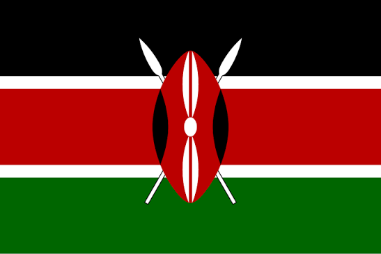
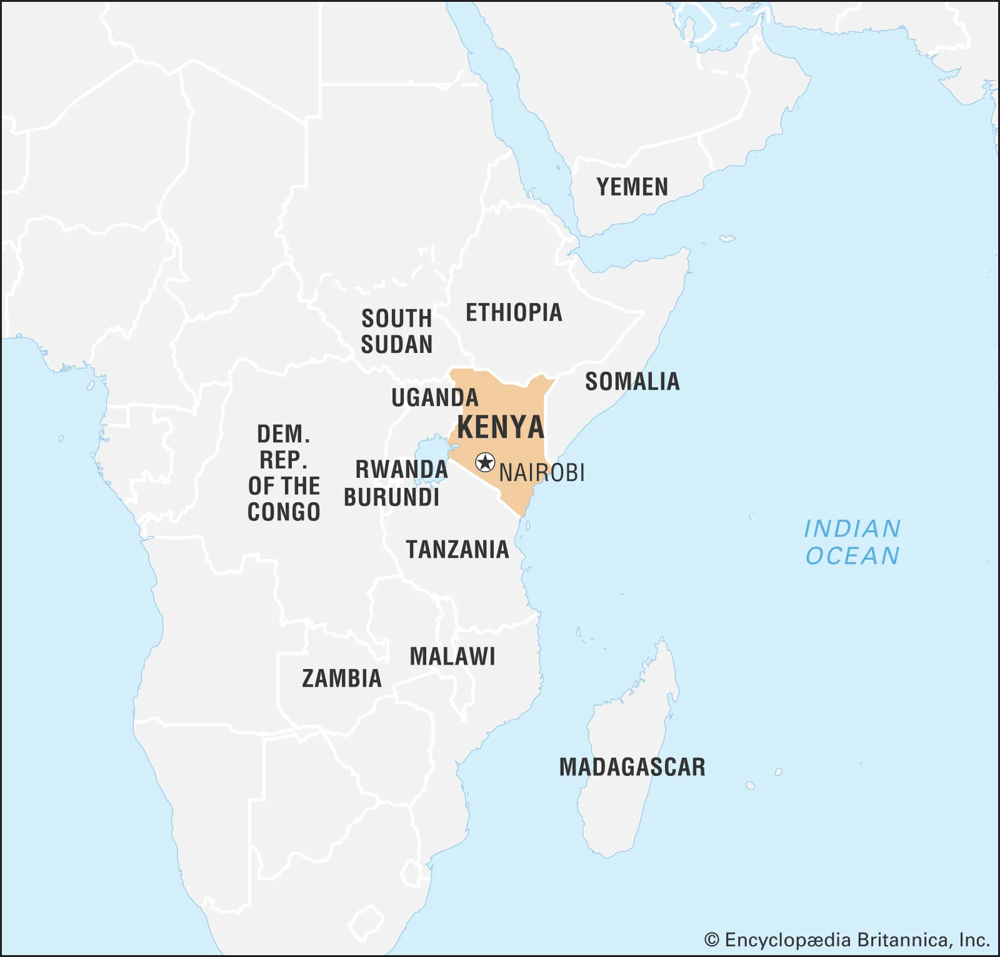
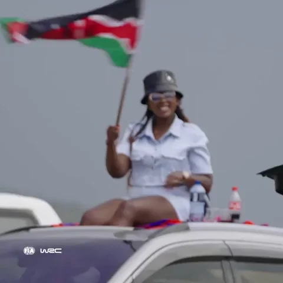
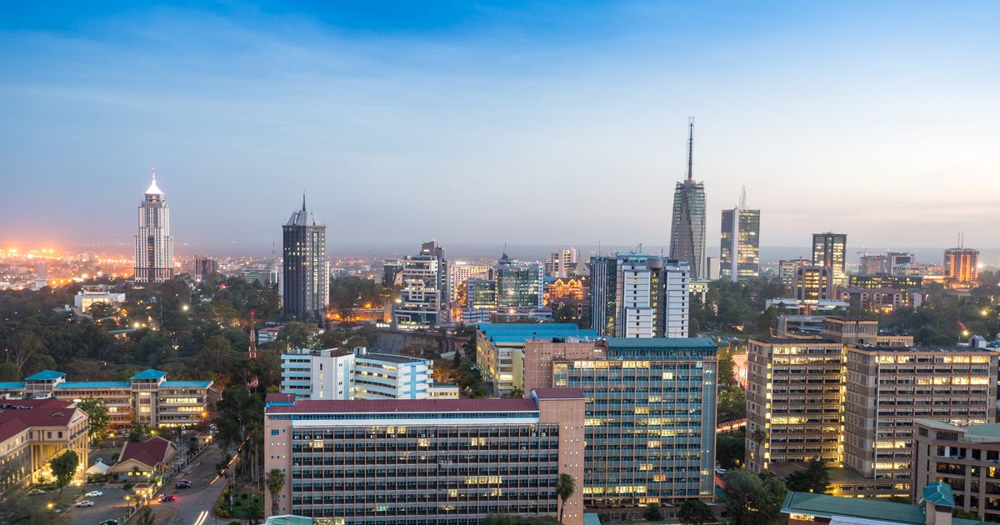
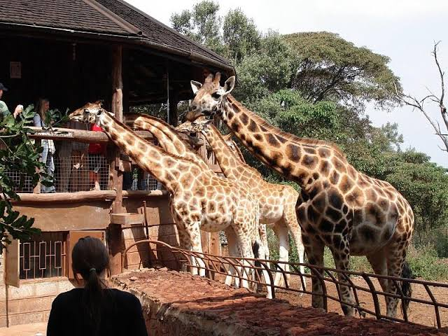
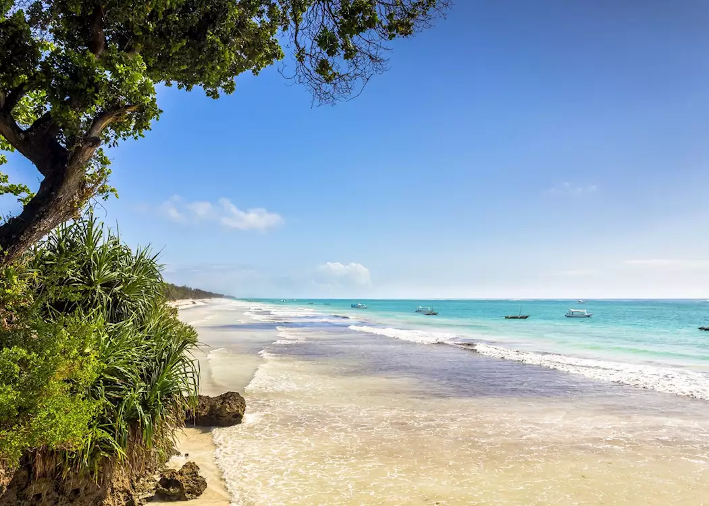
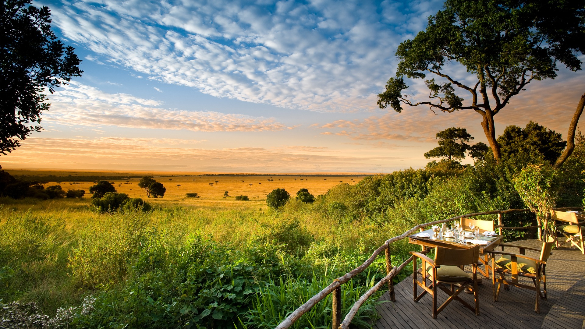

Travel to KENYA !!

Kenya is a country in East Africa with coastline on the Indian Ocean. It encompasses savannah, lakelands, the dramatic Great Rift Valley and mountain highlands. It's also home to wildlife like lions, elephants and rhinos. From Nairobi, the capital, safaris visit the Maasai Mara Reserve, known for its annual wildebeest migrations, and Amboseli National Park, offering views of Tanzania's 5,895m Mt. Kilimanjaro.

Things to do:

- City tour

Approximately 5.6 million people in the city proper, with a wider metropolitan population near 16 million.
Nickname: Known as the "Green City under the Sun".
• Origin: Founded in 1899 as a rail depot on the Uganda–Kenya Railway, taking its name from the Maasai phrase Enkare Nairobi, meaning "cool water". It replaced Mombasa as the capital in 1907.
- Giraffe Feeding

The Giraffe Centre in Nairobi, Kenya, is a world-renowned wildlife conservation and breeding sanctuary dedicated to protecting the endangered Rothschild’s giraffe (also known as the Nubian giraffe). Run by the African Fund for Endangered Wildlife (AFEW) Kenya, it offers one of the most unique wildlife experiences in Africa: the opportunity to stand on a raised wooden observation deck and feed these majestic, gentle giants eye-to-eye.
- Coastal Tour

The Kenyan Coast stretches for roughly 360 miles (536 km) along the warm blue waters of the Indian Ocean, offering an idyllic blend of powdery white-sand beaches, rich Swahili culture, and ancient maritime history.
- Safari (journey in swahili)

A Kenyan safari offers world-class wildlife viewing of the Big Five across iconic landscapes like the Maasai Mara, famous for the Great Migration from July to October, and Amboseli National Park, known for its massive elephant herds set against Mount Kilimanjaro. Ideal for a 3-to-13-day trip during the prime dry seasons of June to October or January to February, a typical journey balances game drives in customized 4x4 vehicles with scenic stops at Rift Valley lakes like Nakuru and Naivasha.
click here to next page